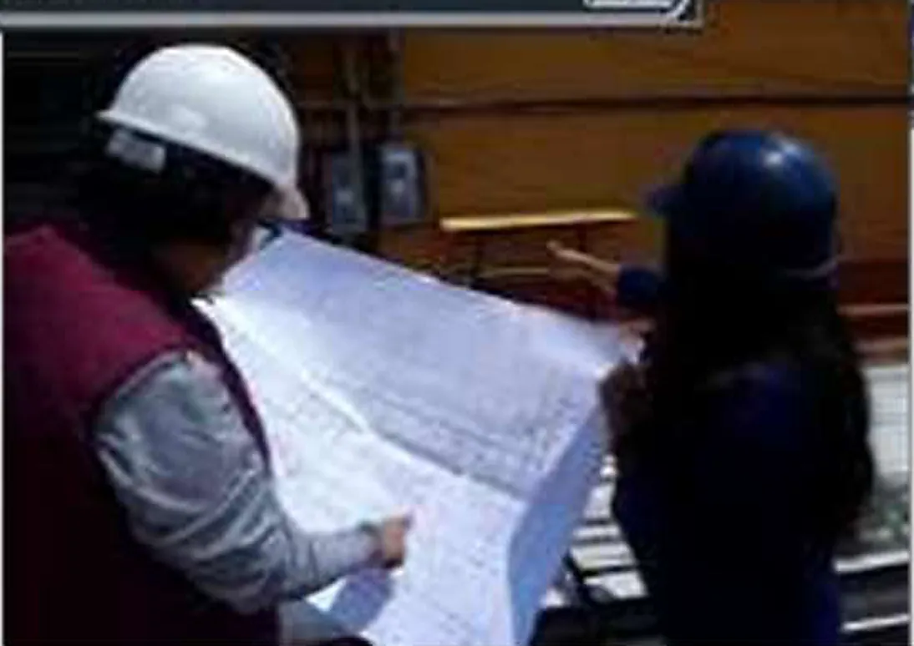

Diseño y cálculo bajo norma
Proyectos eléctricos conforme a la NOM-001-SEDE-2012 (Utilización), con cálculos que respaldan cada decisión.
- Diseño de proyectos eléctricos
- Diagramas unifilares y cuadros de carga
- Cálculo de sistema de tierra y pararrayos
- Análisis de calidad de la energía
